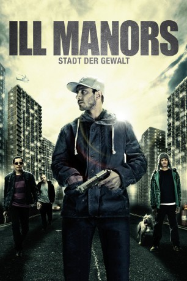

#3851 Ill Manors
 
 IMDB-Wertung: 7.1 / 10
IMDB-Wertung: 7.1 / 10  Tomatometer: 79
Tomatometer: 79  Metascore: 0
Metascore: 0 
Sechs verschiedene Leben auf den Straßen Londons: Ein ehemaliger Drogendealer wird gerade aus dem Gefängnis entlassen. Der Kriminelle Ed (Ed Skrein) lässt sich von nichts und niemandem aufhalten, sein verloren gegangenes Handy wieder zu finden. Die von Sorgen geplagte Michelle (Anouska Mond) ist stets auf der Suche nach dem nächsten Schuss. Der junge Jake wird von der örtlichen Gang immer tiefer in einen Strudel aus Hass und Gewalt gesogen. Chris (Lee Allen) ist von Rache getrieben. Katya (Natalie Press) ist eine Fremde in England und versucht verzweifelt dem Land zu entkommen. Schließlich ist da noch Aaron (Riz Ahmed), der nur das Richtige tun will - in einer Welt, in der es verrückt zugeht und so etwas wie "das Richtige" vielleicht gar nicht existiert.
Jahr: 2012
Dauer: 121 Minuten
FSK: 16
Land: England Studio: Koch MediaTonspuren: DTS - ,
Untertitel: Deutsch,
Auflösung: 1080p (1920x1040) Größe: 7106 MB
Genre: Drama, Krimi
Regisseur: Ben Drew
Drehbuch: Catharina Junk
Soundtrack:
Darsteller:
 Riz Ahmed als Aaron
Riz Ahmed als Aaron Ed Skrein als Ed
Ed Skrein als Ed Mem Ferda als Vladimir
Mem Ferda als Vladimir- Anouska Mond als Michelle
- Robert Judd als Trevor
- Joshua Osei als Young Chris
- Ricci Harnett als Plain Clothes Policeman
- Dannielle Brent als Jo
- Josh McKenzie als Pen Drummer
- Ashleigh Jonas als Marcel's Gang
 Jo Hartley als Carol
Jo Hartley als Carol- Natalie Press als Katya
 Anthony Chisholm als Hotel Manager
Anthony Chisholm als Hotel Manager- Baz Salam als Featured Police
- Hainsley Lloyd Bennett als Armed Response Policeman
- Marc Martin als Armed Response Policeman
- David Barseghian als Rioter
- Danny Devall als Drug Dealer , uncredited
- Karina Diglyte als Brothel Girl , uncredited
- Ben Drew als Cab Driver , uncredited
- Annie Handscomb als Young Girl , uncredited
- Gary Heron als Client in Brothel , uncredited
- Faye Sewell als Fun Time Club Girl , uncredited
- Martin Walker als Karaoke Singer , uncredited
- Lee Allen als Chris
- Dan Lloyd Jones als Guy Being Beaten Up
- Flinty Badman als Yardie Henchman
- Deman Rockers als Yardie Henchman
- Andrew Okello als Kurt
- Neil Large als Terry
- Keef Coggins als Kirby
- Patrick O'Halloran als Liability
- Kevin Waller als Undercover Police Officer
- Neil Finney als Undercover Police Officer
- Mark Scott als Prison Officer
- Richard Watson als Prison CCTV Officer
- Leon Gustaffe als Prison Cleaner
- Sliem Ben-Salah als Social Worker
- Chris Donnelly als Prison Guard
- Booboo Smith als Prison Guard
- Lucy Flack als Chris's Mum
- Jaden Allen als Child Chris
- Shaquille Ryan Kirkland als Teen Chris
- Sean Richard als Plain Clothes Policeman
- Gavin Watson als Plain Clothes Policeman
- Akil Clarke als Barber Shop Background Artist
- Marvin Hay als Barber Shop Background Artist
- Peter Luck als Barber Shop Background Artist
- Nick Sagar als Marcel
- David Coyne als Crackhead
Datei: X:\2012(G-M)\Ill Manors (2012, FSK16, 1920x1040).mkv seit 20.06.2016
Festplatte: HD 2012(A-M)
 Es gibt insgesamt 112 Filme in der Gruppe '2012(G-M)'
Es gibt insgesamt 112 Filme in der Gruppe '2012(G-M)'